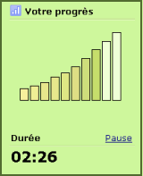

Fonctionnement :
TypingMaster observe vos progrès en temps réel lorsque vous effectuez les exercices.
Si votre dactylographie est suffisamment précise et fluide, le programme vous propose d'effectuer l'exercice en un laps de temps plus court. S'il apparaît que vous avez besoin de plus d'entraînement, TypingMaster vous laisse compléter l'exercice du début à la fin.
De meilleurs résultats en un temps réduit
Grâce à l'Optimisation de la Durée, votre entraînement est basé entièrement sur vos besoins d'apprentissage personnels. Vous vous économiserez ainsi un grand nombre d'exercices qui vous sont inutiles. Votre niveau de compétences global sera également meilleur, puisque vos faiblesses seront pointées immédiatement.